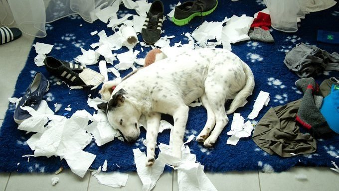
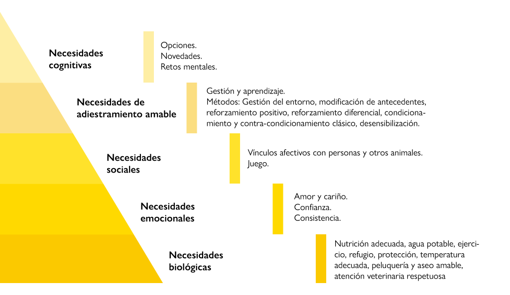
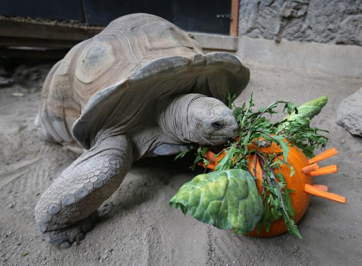
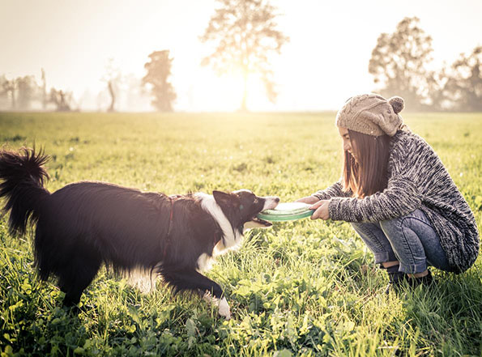
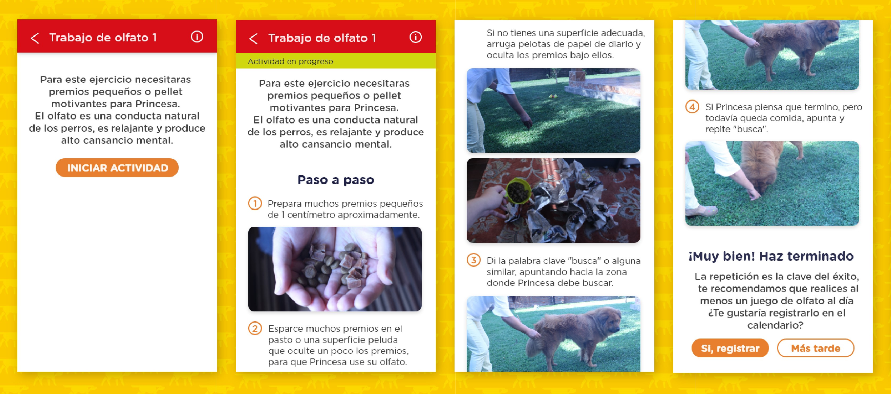
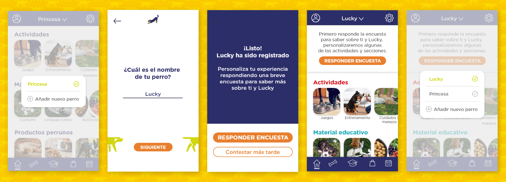
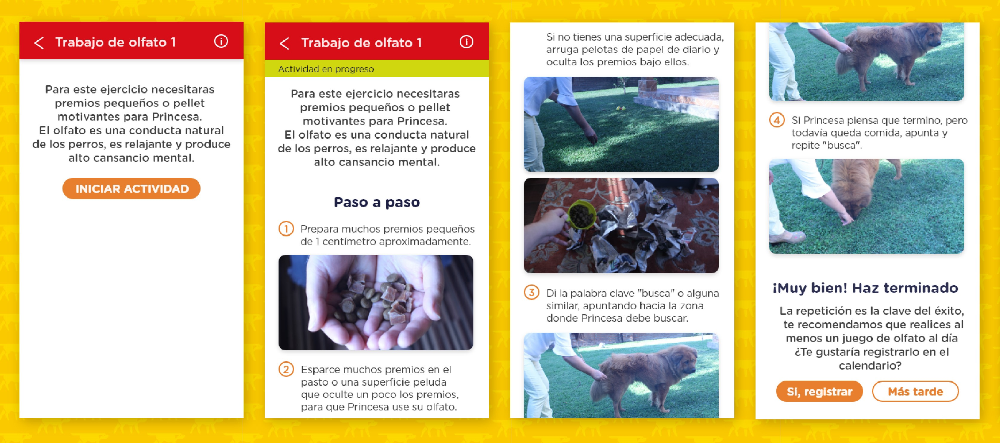
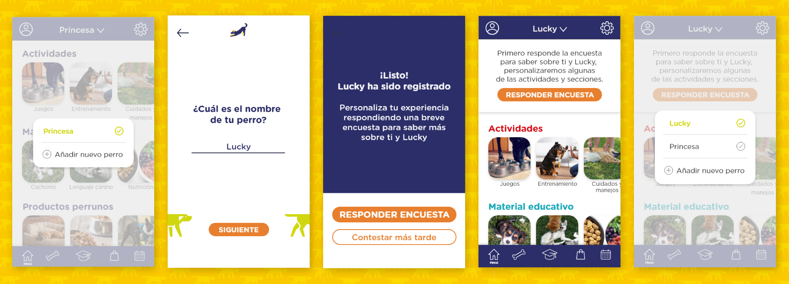

Perrunos, aplicación educativa para tutores de perro
Perrunos es una aplicación educativa para dueños de perros con actividades de enriquecimiento ambiental de tipo sensorial, nutricional, cognitivo, entorno físico, social y entrenamiento, con distintos niveles de dificultad e instrucciones paso a paso, permitiendo una fácil ejecución de las actividades por el tutor y su perro.
Descrubriendo al usuario los dueños de perros
> Algunos datos
Según el estudio Cadem realizado en 2019 el 73% de las familias chilenas tienen mascotas y de ellas un 79% tiene perro.
Los perros cuando son cachorros tipicamente destruyen y muerden todo lo que encuentran. Debido principalmente a que se encuentran en un período donde cambian los dientes entonces les duele y les molestan las encías. Además muerden su entorno como una forma de explorar el mundo. Generando molestias y gastos extras en la familia.
Cuando crecen esta actividad exploratoria empieza a disminuir, pero varía dependiendo de la cantidad de energía y lo que se haga para estimularlo. Al final el responsable de enseñar y darle los cuidados que necesita la mascota es su dueño.
> Jerarquía de las necesidades del perro de Linda Michaels
A partir del uso de esta información se analizaron entrevista que se realizaron a distintos dueños de perros y se descubrió que:
Los dueños están más preocupados por los niveles inferiores de la pirámide como los son las necesidades biológicas. También generan interpretaciones respecto a las conductas que tiene su perro y posibles significados.
“No sé porque no le gusta lo hago en la tina con agua calentita y con jabón especial”
“Busco información para saber si le puedo dar de mi comida”
En el nivel de necesidades sociales si es que juegan juntos repiten siempre el mismo tipo de juego que en su mayoría es con una pelota o sino se tiene problemas comunicándose haciendo que el juego fracase. Respecto a los dos últimos niveles de la pirámide los dueños no entendian mucho cual podrían ser los beneficios para ellos y para su mascota de trabajar más estas cosas. Muchos contaban como sus perros hacían travesuras y destrozos cuando quedaban solos durante muchas horas en casa o cuando las actividades eran poco frecuentes.
Enriquecimiento ambiental como prevención a problemas conductuales y una forma de mejorar la comunicación interespecie.
¿Por qué podemos hablar de enriquecimiento ambiental canino?
“Los perros domésticos se pueden considerar individuos cautivos, en la medida en que no pueden elegir dónde vivir, dónde o cuándo salir, con quién interactuar o qué actividad hacer y cuándo hacerlo”
A partir de este hallazgos se genera una oportunidad al darme cuenta que Los dueños de perros tienen escasa información de como estimular correctamente a su mascota, realizando juegos ineficaces para gastar la energía de los perros. A raíz de esto se comienza a producir estrés crónico deteriorando el bienestar animal, manifestándose a mediano y largo plazo como problemas de conducta. Lo que provocan inconvenientes al tutor con su entorno y gastos no considerados.
EN LOS PERROS
El enriquecimiento ambiental aumenta los niveles de los neurotransmisores serotonina y dopamina, disminuye o desaparecen las conductas no deseadas. La serotonina mejora la regulación de los estados de ánimo, el apetito, el sueño, la motilidad gastrointestinal, la memoria y el aprendizaje. También ayuda a controlar el estrés y el comportamiento impulsivo. La dopamina es un neurotransmisor motivacional, que logra que la corteza prefrontal se enfoque en la actividad e información que entregamos. Fomenta el desarrollo de la corteza cerebral, responsable de las funciones de atención, inhibición y memoria, con un incremento de las conexiones sinápticas.
EN LOS TUTORES
El enriquecimiento ambiental ayuda a disminuir el gasto monetario utilizado para arreglar los desastres asociados a las conducatas indeseadas.Promueve un vínculo afectivo y mejora la comunicación bilateral entre los miembros de la familia y el perro. Por otro lado trabajar el vínculo con nuestra mascota puede proteger de enfermedades cardiovasculares, puede reducir la presión arterial, la frecuencia cardíaca, la ansiedad y el estrés por soledad. También reduce las alteraciones psicológicas, la sensación de soledad, lo que alienta a la conservación de la vida. Por último, en el caso de los niños que desarrollan un vínculo con mascotas alcanzan puntajes más altos en empatía, autoestima y autoconcepto que aquellos que no tienen relación con mascotas.
Wireframe
> Card sorting
La clasificación inicial de las actividades era: Autocontrol, conciencia corporal, cuidado periódicos, estimulación nutricional, manejo emocional, manejo veterinario y resolución de problemas. Después de realizar el card sorting se generaron nuevas categorías y se renombraron otras. Por ejemplo autocontrol paso a llamarse control de impulsos. La categoría de cuidados periódicos, manejo emocional, manejos veterinarios paso a agruparse a cuidados y manejos.
Prototipo final
 


